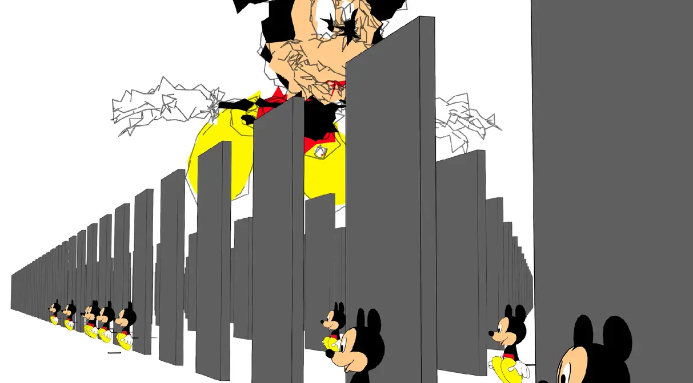
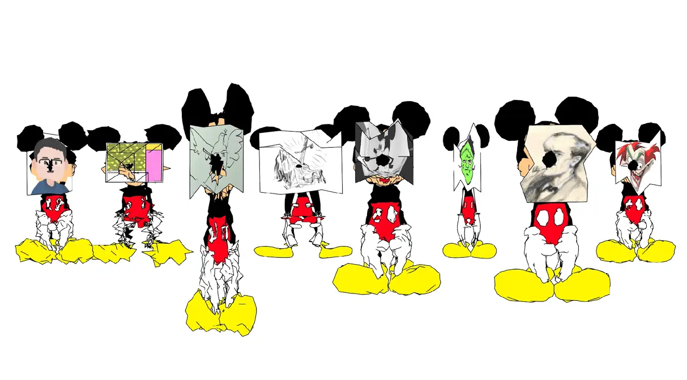

How to Avoid Copyright issues, an educational Video.
This video examines the various stages of copyright enforcement through the lens of Mickey Mouse, one of the most iconic figures in popular culture. Using a visual and conceptual approach, it explores the boundaries and contradictions inherent in copyright law, highlighting its impact on artistic creation and cultural expression.




© 2025 Malcolm Semedo Barreto. All rights reserved.